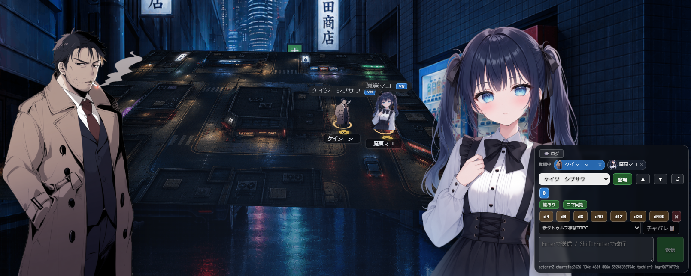
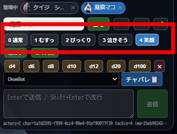
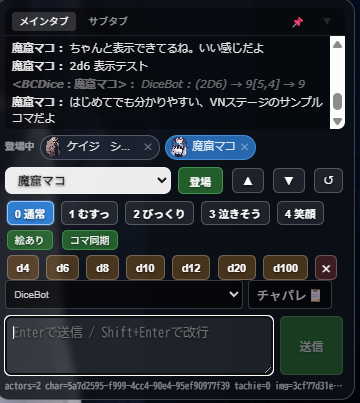

🎭 VNモード
ビジュアルノベル風の立ち絵表示で、セッションの雰囲気を盛り上げます。

VNモードとは
テーブル上部にビジュアルノベル風の立ち絵エリアを表示する機能です。キャラクターの立ち絵が並び、チャット送信時に吹き出しが表示されます。
- キャラクターの立ち絵を並べて表示
- チャット送信時に吹き出し演出
- 立ち絵の差分画像にワンクリックで変更
- チャットパレットと連携してワンクリック発言
- ダイスボットもVNモード内から直接操作可能
VNモードを有効にする

- 画面左のオプションパネル（歯車アイコン）を開く
- 上部の「VN」ボタンをクリック
- テーブル上部にVNステージが表示されます
もう一度クリックするとOFFになります。設定はブラウザに保存されるため、次回以降も同じ状態が維持されます。
キャラクターを登場させる
- VNステージ下部のコントロールパネルにある「キャラ選択」プルダウンからキャラクターを選ぶ
- 「登場」ボタンをクリック
- キャラクターがステージに登場し、立ち絵が表示されます
立ち絵が設定されていないキャラクターの場合は、名前だけが表示されます。登場中のキャラクターは下部の「登場中」エリアにアイコンで表示されます。✕ボタンで退場させることができます。

チャットを送る
- 「キャラ選択」で発言するキャラクターを選ぶ
- テキスト入力欄にメッセージを入力
- Enterで送信（Shift+Enterで改行）
送信すると、ステージ上のキャラクターの頭上に吹き出しが表示されます。
立ち絵の差分画像にワンクリックで変更
キャラクターの画像欄に複数の立ち絵を登録しておくと、発言時に表情を切り替えられます。コントロールパネルの表情ボタンをクリックするだけ！


立ち絵スロット
キャラクターに複数の画像が登録されている場合、コントロールパネルにスロットボタンが表示されます。
- 各ボタンをクリックすると、対応する立ち絵に切り替わります
- アクティブなスロットはハイライト表示されます
- 画像1枚目がデフォルト（通常表情）、2枚目以降を感情表情にする使い方がおすすめ

吹き出しの仕組み
チャットを送ると、発言キャラクターの頭上に吹き出しが表示されます。
- 名前プレート: キャラクター名が表示されます
- タイプライター演出: 文字が1文字ずつ表示されます
- 位置: 左側のキャラは右向き、右側のキャラは左向きに吹き出しが出ます
- 新しい発言があると、前の吹き出しは消えて新しいものに切り替わります

チャットパレット連携
キャラクターにチャットパレットが設定されている場合、VNモード内から直接使えます。
便利な機能
- 検索: パレット内の行をキーワードで絞り込み
- インデックス: セクション見出しにジャンプできるナビゲーション（📑ボタンで表示）
- セクション表示:
// 見出し形式の行はセクションヘッダーとして表示されます
チャットログ
VNモード内でチャットログを確認できます。
- 💬 ログボタンでチャットログを展開
- チャットタブを切り替えて、目的のログを表示
- 📌 ピン留め: ログ表示を固定（ONにしないと一定時間で自動的に閉じます）
- ▼ボタンでログを閉じる

ダイスロール
VNモード内からダイスを振ることができます。
- ダイスボタン: D4, D6, D8, D10, D12, D20, D100 の各ボタンをクリックでダイスを追加
- 複数クリックでダイスを追加（例: D6を3回クリック → 3D6）
- ✕ボタンでダイスをリセット
- ダイスボット選択: プルダウンからゲームシステムを選択すると、BCDiceによるダイスボットが使えます

コマ同期
VNモードの設定で、盤面のコマと連動できます。
- 絵あり/絵なし: ON=立ち絵付きでチャット送信 / OFF=テキストのみ
- コマ同期/コマ独立: ON=VNモードで選択した立ち絵が盤面のコマ画像にも反映 / OFF=盤面コマに影響しない

コマからVNパネルを逆引き 便利機能
オプションの「盤面コマVNボタン」をONにすると、盤面のコマにVNボタンが表示されます。これをクリックするだけで、そのキャラクターのVNパネルに即座に切り替わります。


✨ これの何がすごい？
複数のキャラクターやNPCを扱うとき、これまではそれぞれのキャラクターシートを開いてチャットパレットを切り替える必要がありました。
コマのVNボタンから逆引きすると、立ち絵の選択だけでなくチャットパレットも同期して切り替わるため、チャットパレットウィンドウが1つだけで済みます。1クリックでキャラクターを切り替えて、すぐに発言可能！
立ち位置の調整
- ▲ / ▼: 立ち絵全体の上下位置を微調整
- ↺: 位置をリセット
- ドラッグ&ドロップ: 登場中のキャラクターアイコンをドラッグして、立ち位置の順番を入れ替え可能

Tips
- 後から入室したプレイヤーにも、自動で立ち絵が同期されます
- VNモードをOFFにしてからONに戻しても、登場状態は保持されます
- テーブル右上の「×」ボタンでステージを空にできます（全キャラ退場）
- アドバンスモードの部屋では「自分のコマ」ボタンが表示され、選択中キャラを自分のコマとして設定できます